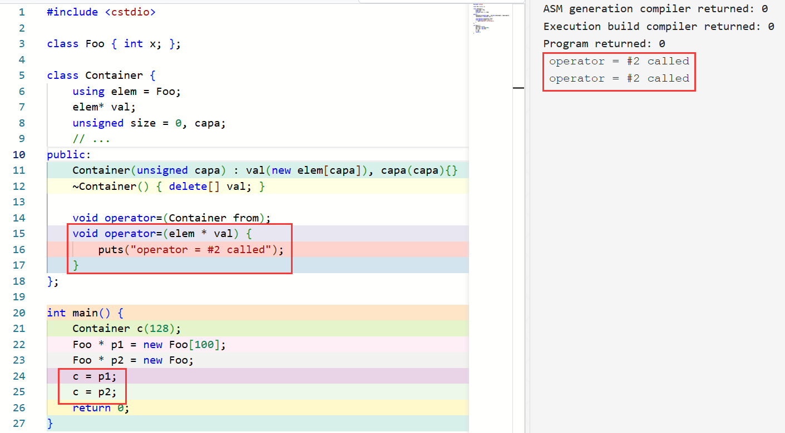
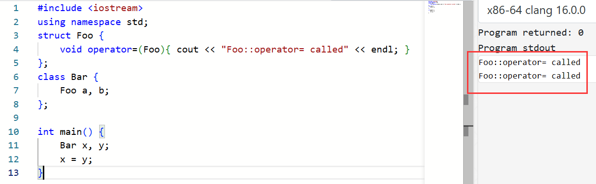
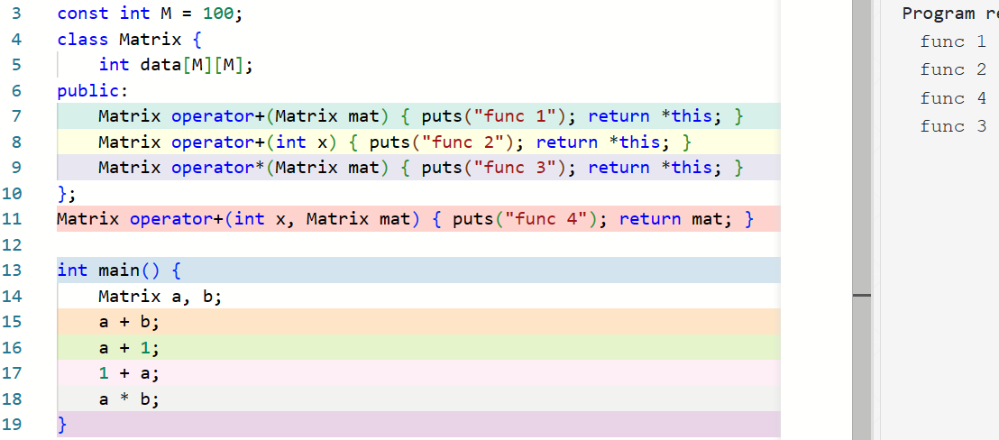
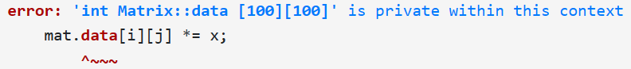
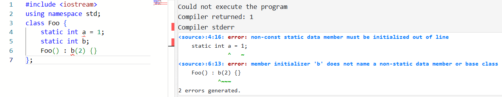

5 类 (II) - 拷贝赋值、运算符重载与引用¶
约 667 个字 98 行代码 2 张图片 预计阅读时间 3 分钟
本节录播地址
本节的朋辈辅学录播可以在 B 站 找到！
5.1 拷贝赋值运算符¶
在上一节中，我们创建了一个「容器」类：
1 2 3 4 | |
我们考虑一个问题：假如有两个 Container 的实例 c1 和 c2，那么 c1 = c2; 会发生什么？
很容易理解，在这个赋值表达式完成后，c1.val 的值变得和 c2.val 一样了；也就是说，这两个容器现在指向同一块内存。
这样的结果会带来两个问题：
c1原来的val也许指向了一块申请来的内存，但是它并没有被释放；- 这样的「赋值」实际上完成的是某种「共享」，而并非真正地建立一个副本。如果这并非本意，那么此后对
c1.val的修改对于c2也可见，且两个对象的析构函数可能会重复析构这块内存，引发错误。
为了解决这个问题，C with Classes 开始就允许用户 重载赋值运算符。实现的方法是，在类内声明一个称为 operator= 的成员函数。例如：
1 2 3 4 5 6 7 8 9 10 11 12 13 14 15 16 17 18 | |
上面的实现演示了一个重载 operator= 的例子，它将 from 中指向的内容拷贝了一份，而非简单地拷贝指针。虽然还有一些问题。在讨论这些问题以及解决方案之前，我们先来看一看这样的运算符重载函数是如何被调用的。
在一个有运算符的表达式中，如果至少一个操作符是某个类的对象1，则由重载解析查找对应的函数。例如 x = y; 就会被视为 x.operator=(y); 进行查找。
上面的例子还有一些问题和改进空间：
如果我们写出了 x = x; 会发生什么事情呢？容易理解，这时 this 和 from 的 val 是同一个，因此 delete[] 在 new[] 之后事实上里面的数据已经丢失了。因此我们需要防范这种情况。
另一个问题是，如果 capa 和 from->capa 的值相同，那就没必要重新开一份空间了。
考虑上述问题，我们可以写出这样的代码：
1 2 3 4 5 6 7 8 9 10 11 12 13 14 15 16 17 18 19 20 21 22 | |
结合函数重载，我们也容易理解，operator= 同样可以有重载。例如：
1 2 3 4 5 6 7 8 9 10 11 12 13 | |
虽然这个例子有点不太恰当（因为没有正确处理 size 和 capa），但是我们仍然能够从中理解：如果有 Container 的实例 c 和一个 elem * 类型的 ptr，那么 c = ptr; 是合法的，因为它实际上会被解释为 c.operator=(ptr);。
这里 有一个具体的例子：
{kind=link}

与之前的讨论类似，如果用户没显式地给出 operator=，那么编译器会生成一个 public 的默认拷贝赋值运算符的声明；如果它被使用，则编译器生成它的定义；它完成的内容即为将各个成员变量用它们的 operator= 拷贝一遍。例如：
{kind=link}

用户也可以将 operator= 设置为 = default; 或者 = delete;。如果 operator= 在当前上下文不可见，那么 a = b; 这样的表达式非法：
class Foo {
void operator=(Foo){} // private operator=
void foo() {
Foo a, b;
a = b; // OK, private function available here
}
};
struct Bar {
void operator=(Bar) = delete; // deleted operator=
void foo() {
Bar c, d;
c = d; // error: use of deleted function
// 'void Bar::operator=(Bar)'
}
};
void foo() {
Foo a, b;
a = b; // error: 'void Foo::operator=(Foo)'
// is private within this context
Bar c, d;
c = d; // error: use of deleted function
// 'void Bar::operator=(Bar)'
}
▲ 运算符重载¶
既然 operator= 可以重载，那么其他运算符可不可以重载呢？答案是肯定的。C++ 希望表达方式是灵活且自由的；对于自定义类型，C++ 希望人们能写出 F = M * A，而非 assign(F, mul(M, A))。
事实上，C 语言的运算符就在一定程度上做了「重载」。回顾上一节的定义，重载的含义是同一个函数（根据参数列表不同）具有不同的行为。例如，* 运算符作为单目运算符时是取值运算符，而作为双目运算符时表示相乘；+ 运算符在两个算术类型之间表示求和，而对于 ptr + i 时其实表示 ptr + i * sizeof(A)，其中 ptr 的类型是 A*。
而 C++ 允许用户重载大多数的运算符从而提高代码的简洁性和可维护性。
考虑一个存放 M * M 大小矩阵的类 Matrix：
1 2 3 4 5 | |
那么，我们可能希望它能支持 Matrix + Matrix, int * Matrix, Matrix * Matrix 等操作。根据我们之前处理 operator= 的经历，我们容易写出如下的代码：
1 2 3 4 5 6 7 8 | |
此时，如果我们写 m1 * m2，其实就等价于 m1.operator*(m2)，就调用我们写的重载了！
这样的实现方式确实能够实现上述操作，但是它限制了我们只能写出 Matrix * int 而不能写出 int * Matrix，因为后者被解释为 int::operator*(Matrix)，但是 int 中并没有这样的重载（C++ 也不希望支持给内部类型增加新的运算2）
如何解决这个问题呢？事实上，运算符重载也可以放在全局，例如：
1 2 3 4 5 6 7 8 9 | |
当 x * y 的操作数中有类实例时，则重载解析会尝试将它解释为 x.operator*(y) 和 operator*(x, y)over.binary.general#1，即 x 对应类中的成员 operator* 和全局的 operator* 都会被纳入候选函数集，然后再根据实际的参数列表完成重载解析：
{kind=link}

这里出现了一个问题！上面的函数 Matrix operator*(int x, Matrix mat)，我们可能会给出这样的实现：
1 2 3 4 5 6 7 | |
友元¶
但是，这个函数并非成员函数，因此访问 private 成员 data 时会出现错误：
{kind=link}

如何解决这个问题呢？事实上，C++ 允许一个类的定义中给一个外部的函数3「授予」访问其 private 成员的权限，方式是将对应的函数在该类的定义中将对应的函数声明为一个 友元 (friend)：
1 2 3 4 5 6 7 8 9 10 11 12 13 14 15 16 | |
这样，这个问题就解决了！
Note
友元只是一种权限授予的声明，友元函数并非类的成员。因此它并不受 access-specifier 的影响。
当然，另一种解决方案是这样的：
1 2 3 4 5 6 7 8 9 10 11 | |
这种方案复用了 Matrix::operator*(int)，这样一方面能提高代码的重用性和可维护性，另一方面又不需要把 operator*(int, Matrix) 设置成友元（因为没有访问 private 成员），因此事实上比前面那种解决方案更好。
其他大多数运算符也能重载。对于一元运算符（如作为正负号的 +, -，以及 !, ~, ++, -- 等），@x 会调用 x.operator@() 或者 operator@(x)。如 -x 会调用 x.operator-() 或者 operator-(x)。
Tips
不过，BS 说他更愿意用 operator prefix++() 和 operator postfix++() 的方式处理，虽然有些人不喜欢增加关键字。
一个例外是，++ 和 -- 既可以作为前缀，也可以作为后缀；这如何区分呢？由于其他的单目运算符都是前缀，因此 C++ 规定 Foo::operator++() 和 operator++(Foo) 用来处理前缀的 ++，而后缀的 x++ 会调用 x.operator++(0) 或者 operator++(x, 0)，即作为后缀时，编译器通过让一个额外的参数 0 参与重载解析。即：
Foo operator++(Foo right); /* prefix */
Foo operator++(Foo left, int); /* postfix */
class Bar {
Bar operator++(); /* prefix */
Bar operator++(int); /* postfix */
};
一些限制
这些运算符不能被重载：:: (scope resolution), . (member access), .* (member access through pointer to member), and ?: (ternary conditional)
对 = (assignment), () (function call), [] (subscript), -> (member access) 的重载 必须是成员
上面这条的原因
Release 2.0 开始要求 operator= 必须是成员，因为：
class X {
// no operator=
};
void f(X a, X b) {
a = b; // predefined meaning of =
}
void operator=(X&, X); // disallowed by 2.0
void g(X a, X b) {
a = b; // user-defined meaning of =
}
即，上面这样的代码会造成混乱。其他赋值运算符因为没有默认的定义，因此不会引起这个问题。
文中还讨论了 [], (), -> 必须是成员的原因。BS 解释说「这些运算符通常要修改第一个 operand 的内部状态」，不过他也说「这也可能是不必要的谨小慎微」。这里 提到，BS 本人现在可能也觉得不太合理，但是没空改。
不能添加用户自定义的运算符。重载运算符也不能修改运算符的优先级、结合性和操作数数目。
除了函数调用运算符 operator() 以外的运算符重载不能包含 default arguments。
对 && 和 || 的重载将不再会有 short-circuit evaluation。
▲ 引用¶
考虑前面我们设计的 Matrix 类：
1 2 3 4 5 6 7 8 9 10 11 12 | |
容易发现，这个类的对象占据的内存是非常大的，因此我们将对象作为参数传递时会有很大的开销。
我们在 C 语言中学习过，可以通过传递指针的方式来减少不必要的拷贝。例如有函数 int getSum(Matrix mat); 就可以改为 int getSum(Matrix * mat);，调用时通过 getSum(&m)，就可以只传递指针而不必拷贝整个对象了。
但是，对于上面的 Matrix::operator-(Matrix);，我们如何解决这个问题呢？C++ 并不希望要求程序员在这种情况下将 m1 - m2 改为 &m1 - &m2 去写。一方面是不自然，另一方面是指针相减在语言中已有定义。
为了解决这个问题，BS 将 Algol 68 中的 引用 (reference) 机制引入了 C++4。
一个引用是一个已经存在的对象或者函数的别名。例如：
int x = 2;
int & y = x; // y is an alias for x
这样，对 y 的所有操作都和对 x 的操作一样了；y 不是 x 的指针，也不是 x 的副本，而是 x 本身。包括获取它的地址—— &y 和 &x 的值相同。
也是因此，我们无法重新约束一个引用所绑定的变量。因为：
int z = 3;
y = z;
上面的 y = z 实际上是给 x 赋值为 z，而非将 y 重新绑定到 z。
引用作为参数¶
显然，在同一个作用域内，给一个变量起一个别名并不会有太多的现实意义。引用最广泛的用法是作为参数传递：
1 2 3 4 5 6 7 8 9 10 11 12 | |
我们知道，C 和 C++ 的函数参数传递都默认是按值传递 (pass-by-value) 的，而引用机制使得 C++ 中可以实现类似上面的按引用传递 (pass-by-reference)。在调用 swap 之后，i 成为了 x 的别名，对 i 做的一切操作事实上就是作用于 x 了。
这样，我们就能简易地解决前面的问题了：我们只需要让 Matrix 传递时传递引用即可：
1 2 3 4 5 6 7 8 9 10 11 12 | |
我们这里使用了 const Matrix & 而不只是 Matrix &，从而说明 mat 是只读而不可修改的。虽然后者也能实现我们需要的效果，但是这样能够保证函数中只会读取 mat 的值，而不会意外修改它。
就像我们可以用一个 const int * 保存一个 int 的地址一样，这种「给出更强保证」的隐式类型转换对于引用也显然是合法的。即，如果有一个 int，我们可以给它一个类型为 int & 或者 const int & 的别名：
void foo() {
int x = 1;
const int y = 2;
int & rx1 = x; // OK
rx1 = 3; // OK, now x is 3
const int & rx2 = x; // OK
rx2 = 4; // Error: assignment of read-only reference 'rx2'
int & ry1 = y; // Error: binding reference of type 'int' to value of type
// 'const int' drops 'const' qualifier
const int & ry2 = y; // OK
}
引用作为返回值¶
引用也可以作为函数的返回值。看下面的例子：
1 2 3 4 5 6 7 8 9 10 | |
这样，如果有一个 Container 对象 c，我们就可以通过 c[i] 的方式访问容器中的值，如读取 x = c[i] 或者写入 c[i] = x。由于其返回的是一个引用，我们可以通过这个引用来修改其值。这使得我们不再需要写 c.getVal()[i] = x 之类的丑陋代码。
当然，如果希望 operator[] 返回的值是只读的，我们只需要让函数返回 const elem & 即可：
const elem & operator[](unsigned index);
这在 elem 比较大的时候有助于避免不必要的拷贝。不过，在 elem 是比较小的基本类型且没有修改需求的情况下，则直接返回值会更好一些。
Tips
请在返回引用时注意避免 dangling reference。例如：
int & foo () {
int tmp = 10;
// ...
return tmp;
}
这里 tmp 作为局部变量，在函数结束时就会被销毁；但是函数却返回了一个引用这个已经不存在的变量的引用。这是个 dangling reference，将会导致 undefined behaviorstd_citation_needed。
关于自定义矩阵的 operator[]
假如我们有这样的定义：
const int M = 100;
class Matrix {
int data[M][M];
};
如果我们希望能够以 mat[x][y] 的方式访问 mat.data[x][y]，应该怎么办呢？很遗憾，由于它实际上调用的是 mat.operator[](x).operator[](y)，因此 mat.operator[](x) 返回的东西必须是一个定义了 operator[] 的类型。
虽然以下定义是可行的，因为 int * 类型可以使用下标访问：
const int M = 100;
class Matrix {
int data[M][M];
public:
int * operator[](unsigned index) { return data[index]; }
};
但是，假如我们需要检查是否下标越界，这样的实现就不好了。
因此，我们可能不得不这样定义：
const int M = 100;
class Row {
int data[M];
public:
int & operator[](unsigned index) { return data[index]; }
}
class Matrix {
Row data[M];
public:
Row & operator[](unsigned index) { return data[index]; }
}
另一种方案是，借用能接受任意个参数的函数调用运算符 ()，即：
const int M = 100;
class Matrix {
int data[M][M];
public:
int & operator()(unsigned x, unsigned y) { return data[x][y]; }
};
这样，我们就可以使用 mat(x, y) 的形式访问对应的元素了。
好消息是，自 C++23 开始，operator[] 也可以接收任意个参数了（此前确切只能接收 1 个），因此我们可以写：
const int M = 100;
class Matrix {
int data[M][M];
public:
int & operator[](unsigned x, unsigned y) { return data[x][y]; }
};
不过在调用时，我们仍然需要使用 mat[x, y] 而非 mat[x][y] 的方式访问对应元素。
引用类似于包装了的指针¶
从实现的角度而言，我们可以认为引用更类似于 const 指针，即 int & y = x; 类似于对 int * const py = &x; 的包装，对 y 的使用实际上是使用 *py。
不过需要注意的是，在实际实现中，引用并不一定会占用存储dcl.ref#4。这是很容易理解的。
const
如果你并不记得 const int *, int const *, int * const, const int * const 之类的东西代表什么含义，可以看这里复习一下。
首先，const 是一种 cv-qualifier，它可以和任何类型说明符组合，以指定被声明的对象是常量。
cv-qualifier
c 指 const，v 指 volatile；后者我们暂不讨论。
尝试直接修改 const 限定的变量会被编译器拒绝：
const int i = 3;
i = 0; // assignment of read-only variable 'i'
因此，具有 const 限定类型的变量必须被初始化：
const int i; // error: uninitialized 'const j'
const int * 和 int const * 用来表示「指向一个不可变的 int 的指针」，指针本身可以被修改，但是指向的变量是只读的：
1 2 3 4 5 6 7 8 9 10 11 12 13 14 15 16 17 | |
而 int * const 用来表示「指向一个 int 的不可变的指针」，指针本身不能被修改，但是指向的变量是可以修改的：
1 2 3 4 5 6 7 8 | |
而 const int * const 和 int const * const 则表示「指向一个不可变的 int 的不可变的指针」，指针本身和指向的变量都不能被修改。
这样，我们也很容易理解为什么不存在 const & const 这样的东西了——因为引用本身就不能被重新约束。
结合上面的讨论，我们容易理解：引用变量必须被初始化6dcl.ref#5：
int & bad; // error: declaration of reference variable 'r' requires an initializer
引用与临时对象¶
临时对象
我们来考虑这么一个问题：
我们之前定义了 Matrix 类（本节 m, m1, m2 等均是其对象，后文不再赘述）。回顾我们前面的函数定义，我们有 Matrix Matrix::operator-(const Matrix & mat);。那么，我们如果写了这样一个表达式：
m1 - m2;
它会调用 Matrix::operator- 并返回一个 Matrix 类型的值，这个值是一个临时对象7。问题是：这个对象会在什么时候被析构？
答案很简单——在这个表达式结束之后立刻被析构。这么做的原因是直观的：我们此后再也无法访问到这个对象，因为它是一个没有名字的 临时对象 (temporary object)。
临时对象的生命周期
事实上，临时对象会在它所在的 完整表达式 (full-expression) 结束时被销毁。所谓完整表达式结束时，大多数情况下就是下一个 ; 所在的位置8。
假如我们又定义了一个「打印矩阵」的函数 void print(const Matrix &);，显然，如果我们有若干个 Matrix 对象 m1, m2, ...，那么 print(m1) 和 print(m2) 之类的函数调用都是合法的。
那么，请问：print(m1 - m2); 是合法的吗？
答案是肯定的。如我们之前所说，m1 - m2 所形成的临时对象会在所在完整表达式结束时，即 print(m1 - m2) 运行完成时被销毁。因此在该函数执行过程中，这个临时对象是仍然存在的。
不过，我们考虑这样的情况：
Matrix m = m1 - m2;
根据我们之前所说，m1 - m2 得到一个临时对象，这个临时对象会在所在表达式结束时被销毁。而在这个语句中，我们又用这个临时对象构造了一个新的 Matrix 对象 m。这有些浪费——我们析构了一个对象，同时构造了一个跟它一模一样的对象；如果我们能够延长这个临时对象的生命周期，就可以节约一次构造和一次析构的开销9。
因此，C++ 规定：可以将一个临时对象绑定给一个 const 引用，这个临时对象的生命周期被延长以匹配这个 const 引用的生命周期class.temporary#6。例如：
void foo() {
const Matrix & m = m1 - m2; // temporary `Matrix` has same lifetime as `m`
// ...
// at the end of this function block, the lifetime of `m` ends,
// so the lifetime of temporary `Matrix` ends, d'tor called.
}
临时对象与 non-const 引用
上面将临时对象传递给 const Matrix & 参数和用临时对象初始化 const Matrix & 的两个例子共同反映了一个事实：我们可以把一个临时对象绑定给一个 const 引用。
下一个问题是：我们能否将一个临时对象绑定给一个 non-const 引用呢？
答案是不能。我们考虑这样一个情形：
void incr(int & rr) { rr++; }
void g() {
double ss = 1;
incr(ss); // error since Release 2.0
}
如果我们允许临时对象绑定给一个 non-const 引用，那么上面的代码会发生这样的事情：ss 被隐式转换成一个 int 类型的临时对象，这个临时对象被传递给 incr 并在其中 ++ 变成 2；incr(ss); 结束后临时对象被销毁——这时 ss 的值仍然是 1.0 而不是 2.0，这与直觉不符。
因此，允许将一个临时对象绑定给一个 non-const 引用并没有太多的好处，但是会带来一些不慎修改了临时对象引发的错误，这些错误通常十分隐晦。因此，BS 在 Release 2.0 的时候将它修复了——临时对象不允许被绑定给 non-const 引用。
引用与重载解析¶
我们之前提到，重载解析时会在可行函数集中找到一个函数，它优于其它所有函数。那么，这里的「优于」在引用相关的话题中是如何定义的呢？
我们以 int 类型为例，其他类型与此类似。
首先，将一个 int 类型的变量传递给 int 类型的参数和 int & 类型的参数的优先级是一样的11：
void f(int x) { puts("int"); } // Overload #1
void f(int & r) { puts("int &"); } // Overload #2
int main() {
int x = 1;
f(1); // OK, only #1 valid
f(x); // Error: ambiguous overload
}
同时，将 int 类型的变量传递给 int 类型的参数和 const int & 类型的参数的优先级也是一样的；而且我们之前讨论过，字面量可以被绑定给 const 引用，事实上 int 类型的临时变量传递给 int 类型的参数和 const int & 类型的参数的优先级也是一样的11：
void g(int x) { puts("int"); }
void g(const int & r) { puts("const int &"); }
int main() {
int x = 1;
const int y = 2;
g(1); // Error: ambiguous overload
g(x); // Error: ambiguous overload
g(y); // Error: ambiguous overload
}
不过，如果有两个重载，它们在某一个参数上的唯一区别是 int & 和 const int &，而 int 类型的变量绑定给这两种参数都是可行的，此时 int & 的更优over.ics.rank#3.2.6：
void h(int & r) { puts("int &"); }
void h(const int & r) { puts("const int &"); }
int main() {
int x = 1; // Overload #1
const int y = 2; // Overload #2
h(1); // OK, only #2 valid
h(x); // OK, #1 called as x -> 'int&' is better than x -> 'const int&'
h(y); // OK, only #2 valid
}
类的引用成员和 const 成员¶
如我们上面所说，引用和 const 变量都需要在定义时给出初始化。那么如果一个类中有引用或者 const 成员怎么办呢？答案是，就像没有默认（无参）构造函数的子对象一样，必须由 member initializer list 或者 default member initializer 提供初始化。如：
int global = 10;
class Foo {
const int x = 4; // OK
const int y; // must be initialized by member initializer list
int & rz = global; // OK
int & rw; // must be initialized by member initializer list
public:
Foo(int m, int & n) : y(m), rw(n) {} // OK
Foo() : y(0), rw(global) {} // OK
Foo() : y(0) {} // Error: uninitialized reference member in 'int&'
Foo() : rw(global) {} // Error: uninitialized const member in 'const int'
};
为什么 this 不是引用？
因为有 this 的时候 C++ 还没有引用。12
keyword arguments 的替代
Keyword arguments 或者 Named Parameter Idiom 是指根据参数的名字而非参数的位置来传参。这种机制在 C 和 C++ 中并不支持，它们只支持按位置传参。Python 之类的语言是允许这种传参方式的，即通过 f(b = 1) 之类的写法可以指定 b 的值是 1。
没有采用这种方案的主要原因之一是，这种特性要求在函数声明和定义中每个参数的名字都必须对应相同；这会引发兼容性问题。这是因为 C 和 C++ 中忽略非定义的函数声明中参数的名字，尤其是有些风格在头文件中使用「长而富含信息」的名字，而在定义中使用「短而方便」的名字。例如：
// in foo.h
int vowelStrings(Container& words, int left, int right);
// in foo.cpp
int vowelStrings(Container& w, int l, int r) { /* ... */ }
实现类似效果的方案之一是结合 default arguments 和继承；另一种方案是使用类似这样的代码：
class w_args {
wintype wt;
int ulcx, ulcy, xz, yz;
color wc, bc;
border b;
WSTATE ws;
public:
w_args() // set defaults
: wt(standard), ulcx(0), ulcy(0), xz(100), yz(100),
wc(black), b(single), bc(blue), ws(open) { }
// override defaults:
w_args& ysize(int s) { yz=s; return *this; }
w_args& Color(color c) { wc=c; return *this; }
w_args& Border(border bb) { b = bb; return *this; }
w_args& Border_color(color c) { bc=c; return *this; }
// ...
};
class window {
// ...
window(w_args wa); // set options from wa
// ...
};
window w; // default window
window w( w_args().color(green).ysize(150) );
这种方案利用了将引用作为返回值的机制。这种方法常被称为 method chaining。
▲ I/O stream¶
前面我们聊了运算符重载和引用之类的话题。在 C++ 中，对它们的一个经典应用是输入输出流。
在 C 中，大家熟悉的输入输出方式是 scanf 和 printf，它们对类型的识别并不是静态的，而是动态地根据格式控制字符串中 %d 之类的东西处理的，这在带来一些安全问题13的同时还引发了一个重要问题——没有办法支持用户自定义类型。
在 C++ 中，新的头文件 <iostream> (input / output stream) 中提供了两个全局对象 cin (char input) 和 cout (char output) 用来完成输入输出。举一个例子：
1 2 3 4 5 6 7 8 9 | |
这里的 std::cin 中的 std (standard) 是对象 cin 所处的 命名空间 (namespace) 的名字；我们会在后面的章节讨论命名空间；:: 仍然是我们熟悉的 scope resolution operator。std::cout 和 std::endl 也类似；其中 endl (endline) 是换行14。
std::cin >> x >> y; 表示从标准输入流中读取 x，然后读取 y，它等价于 std::cin >> x; std::cin >> y;。这里的运算符 >> 本身的含义是右移，而这里我们通过运算符重载给它赋予了新的语义：从流中提取 (stream extraction)。
std::cout << "x = " << x << ", y = " << y << std::endl; 表示向标准输出流中输出字符串 "x = "，然后输出 x 的值，然后输出字符串 ", y = "，然后输出 y 的值，然后输出换行。<< 本来是左移，而这里对各种基本类型重载了 << 运算符，来实现向流中插入 (stream insertion) 的语义。
using
如果懒得在每一个地方都写 std::，可以通过 using 语句。例如：
void foo() {
using std::cin;
using std::cout;
cin >> x; // std::cin
cin >> y; // std::cin
cout << "x = " << x << ", "; // std::cout
cout << "y = " << y << std::endl; // std::cout
}
这里 using std::cin 就表示「若无特殊说明，cin 即指 std::cin」。
或者使用 using namespace std; 表示「若无特殊说明，这里面不知道是什么的东西去 std 里找」：
void foo() {
using namespace std;
cin >> x; // std::cin
cin >> y; // std::cin
cout << "x = " << x << ", "; // std::cout
cout << "y = " << y << endl; // std::cout, std::endl
}
using 语句也属于其作用域，作用范围持续到其所在块结束。将其放到全局，则其作用范围持续到其所在文件结束。
这是如何实现的呢？std::cin 的类型是 std::istream (input stream)，它其中对各种基本类型重载了 operator>>，我们上面使用到的两个分别是：
istream & istream::operator>>(int & value) {
// ... extract (read) an int from the stream
return *this;
}
istream & istream::operator>>(double & value) {
// ... extract (read) a double from the stream
return *this;
}
函数中如何实现从流中读出数据暂且不是我们所在意的重点。我们关注的是——为什么要返回 istream & 类型的对象本身。
我们考虑 cin >> x >> y; 的运行顺序。首先 cin >> x 被运行，因此这个表达式就类似于 (cin.operator>>(x)) >> y;，而 cin.operator>>(x) 运行结束后返回 cin 本身，剩下的表达式就是 cin >> y; 了。因此，返回 *this 的好处就是能够实现这种链式的读入。
与 cin 类似，std::cout 的类型是 std::ostream (output stream)，它同样对各种基本类型重载了 << 运算符。一个例子是 ostream& ostream::opreator<<(int value);。
前面代码中 cout 完成链式输出的具体调用过程留做练习。
知道了这些，我们就能够为自己的类提供对 >> 和 << 的重载，从而能够支持用 cin 和 cout 方便地输入和输出自定义类型了：
1 2 3 4 5 6 7 8 9 10 11 12 13 14 15 16 17 18 19 20 21 22 23 24 25 26 27 28 29 30 31 32 33 34 35 36 37 38 39 40 | |
这里的 std::string 是 C++ 提供的字符串类型，它也是一个类。19 行看到的 std::to_string 函数能够（通过重载）把内置类型转换为 std::string，而 20~23 行可以看到 += 能够实现字符串的拼接。operator<< 同样有针对 std::ostream 和 std::string 的重载。18 行的 toString() 成员函数实现按照 Complex 类的对象生成一个字符串。
可以看到，函数头部有一个 const，它表示这个函数不会对调用者（*this）造成更改；进一步地说，this 的类型现在是 const Complex * 而不是 Complex * 了。我们会在后面具体讨论它的意义。
26 行我们重载了 operator<<；由于这个运算符的第一个操作数通常会是 cout，但是我们又没法自己改 std::ostream，因此我们只能把这个运算符重载函数定义为全局函数。可以看到，这个函数简单地将 right.toString() 的结果输出给了 os（通常是 cout），然后返回了调用者的引用本身。
30 行我们重载了 operator>>。它从 is（通常是 cin）中读取了复数的虚部和实部（以及用一个 char 接收了不重要的部分），然后返回了调用者的引用本身。
需要注意的是，operator>> 访问了 Complex 类的私有成员 real 和 imaginary，因而必须在 Complex 类中声明为友元（第 14 行）；但 operator<< 只访问了其公有成员 toString()，因此无需设置成友元。
容易看到，cin 和 cout 的设计使得代码的可读性和可维护性更好，也一定程度上提高了安全性。
Tips
关于 cin 和 cout 还有很多问题没有讨论，例如格式控制、遇到错误输入的处理、流的具体实现等等。作为基本要求，大家能够掌握它们的基本用法即可。感兴趣的同学可以自行寻找资料深入了解。
▲ const 和 static 成员¶
const 成员函数¶
我们之前看到了 const 成员函数：
class Complex {
// ...
string toString() const;
// ...
};
声明为 const 的成员函数称为 const 成员函数，它保证不会修改 *this 的值；即调用这个成员函数的对象不会被更改。而如果没有 const，则没有这一保证。具体来说，声明为 const 的成员函数中，this 的类型是 const Complex *；而如果没有声明为 const，则 this 的类型是 Complex *。
如果没有这个保证，会出现什么问题呢？考虑这样的情形：
struct Foo {
string toString();
};
void bar(Foo & a, const Foo & b) {
a.toString(); // OK
b.toString(); // Error: 'this' argument to member function 'toString'
// has type 'const Foo', but function is not marked const
}
这种问题的原因很简单，我们要求 b 不能更改，但是函数 toString() 没有保证自己不会修改 *this 的值，因此调用这一函数是不安全的。
从语言实现的角度来说，我们取调用者 b 的指针，得到的是 const Foo *；但是 toString() 不是 const 成员函数，因此它的 this 是 Foo *；用 const Foo * 去初始化 Foo * 会丢失 cv-qualifier，这是 C++ 不允许的。因此这样的调用不合法。
显然，在 const 成员函数中，试图调用其他非 const 成员函数，或者更改成员变量都是不合法的：
struct Foo {
int a;
void foo();
void bar() const {
a++; // cannot assign to non-static data member
// within const member function
foo(); // 'this' argument to member function 'foo' has type
// 'const Foo', but function is not marked const
}
};
mutable
和之前的讨论一样，const 的设计是为了检查偶然的错误，但是不是为了给程序员增加不必要束缚。程序员在需要的时候，可以 明确地 要求做一些突破类型系统的事情；这些内容有时是有用的15。例如：
struct Foo {
int a;
void foo() const {
((Foo *)this)->a = 2;
}
};
在这里，程序员显式地要求将 this 转换到 Foo *，去掉了 cv-qualifier；然后更改了 a 这个参数。这种事情是 C++ 允许的，但是有可能出错——如果 *this 被存放在只读的存储器里，这句话实际上没办法工作。
但是事情并非总是如此。如果程序员明知调用的对象不可能存放在只读存储器中，那么他这么做是没有问题的。例如，调用的对象是一个 non-const 的对象，虽然它的地址在调用这个函数时确实被赋值给了 const Foo *，但是它指向的那个对象确实不是 const 对象，所以这种赋值是能够完成的。当然，如果调用的对象是一个 const 对象，那么这样的行为是 UBdcl.type.cv#4。
但是，上面这种编程方式有点太极限了，它不适合绝大多数的人。然而，让对象的一部分是可变的这种需求仍然是比较普遍的。为了满足这种需求，C++ 引入了一个关键字 mutable；用 mutable 声明的类成员，即使包含它的对象是 const 的也能够修改：
struct Foo {
mutable int a;
void foo() const {
a = 2; // OK
}
}
显然，mutable 成员不应声明为 const 的。
注意，const int Foo::foo(); 不是 const 成员函数，它是个返回值类型为 const int 的 non-const 成员函数。
值得说明的是，是 const 和非 const 的两个同名成员函数实际上是合法的重载，因为它们其实说明了 this 的类型是 T* 还是 const T*：
struct Foo {
void foo() { cout << 1 << endl; }
void foo() const { cout << 2 << endl; }
};
int main() {
Foo f;
const Foo cf;
f.foo(); // #1 called, as Foo* fits Foo* best
cf.foo(); // #2 called, as const Foo* can only fit const Foo*
}
作为一个实例，我们回顾之前的对 operator[] 的重载。事实上，通常的设计会这样重载16：
class Container {
elem * data;
// ...
public:
elem & operator[](unsigned index) { return data[index]; }
const elem & operator[](unsigned index) const { return data[index]; }
// ...
}
即，当调用者是 const Container 时，第二个重载会被使用，此时返回的是对第 index 个元素的 const 引用；而如果调用者是 Container 时，第一个重载会被使用，此时返回的是对第 index 元素的 non-const 引用。
static 成员变量¶
我们考虑这样一个情形：
int tot = 0;
struct User {
int id;
User() : id(tot++) {}
};
即，我们有一个全局变量 tot 用来表示当前的 id 分配到第几号了；当构建一个新的 User 实例时，用 tot 当前值来初始化其 id，然后 tot++。
显然这个 tot 逻辑上属于 User 这个类的一部分；但是我们不能把它当做一个普通的成员变量，因为这样的话每个对象都会有它的一个副本，而不是共用一个 tot。但是，放成全局变量的话又损失了封装性。怎么办呢？
C++ 规定，在类定义中，用 static 声明没有绑定到类的实例中的成员；例如：
struct User {
static int tot;
int id;
User() : id(tot++) {}
};
int User::tot = 0;
这个 tot 虽然从全局移到了类内，但是它仍然具有 static 的生命周期。它的生命周期仍然从它的定义 int User::tot = 0; 开始，到程序结束为止。由于它是类的成员，因此访问它的时候需要用 User::tot。
如我们刚才所说，static 成员不被绑定到类的实例中，也就是上面 User 类的每个实例里仍然只有 id 而没有 tot。不过，语法仍然允许用一个类的实例访问 static 成员，例如 user.tot17。静态成员也受 access specifier 的影响。
需要提示的是，之前我们讨论的 default member initializer 和 member initializer list 是针对 non-static 成员变量的，它们对于 static 成员变量不适用：
{kind=link}

也就是说，在类中的 static 成员变量 只是声明 class.static.data#3。也就是说，我们必须在类外给出其定义，才能让编译器知道在哪里构造这些成员：
class Foo {
static int a;
static int b;
};
int Foo::a = 1;
int Foo::b;
这一要求的动机是，我们通常会把类的定义放到头文件中，而头文件通常会被多个翻译单元（多个源文件）包含；如果 static 成员变量在类中定义，这样多个翻译单元就会有多个这个静态变量的定义，因此链接就会出错。
注意，根据我们之前的讨论，int Foo::b; 也是定义。与 C 语言中我们学到的内容相同，它会被初始化为 0。一旦定义了静态成员，即使没有该类的成员被创建，它也存在。
作为一个例外，如果一个 const static 成员变量是整数类型，则可以在类内给出它的 default member initializerclass.static.data#4:
struct Foo {
const static int i = 1; // OK
};
int main() {
cout << Foo::i << endl;
}
另外，自 C++17 起，static 成员变量可以声明为 inline；它可以在类定义中定义，并且可以指定初始化器：
struct Foo {
inline static int i = 1; // OK since C++17
}
在这种情况下，C++ 要求程序员保证各个编译单元内的这个变量的初始值是同一个，因为链接器在这种情况下会把多个定义合并为一个定义。事实上，在现代的 C++ 中，inline 不再表示「请把这个东西内联」，而是表示「这个东西可以有多个定义；程序员负责保证这些定义是一致的，因此链接时可以把它们合并」。我们会在后面的章节中再讨论 inline 相关的问题。
static 成员变量不应是 mutable 的。
static 成员函数¶
static 函数的动机和 static 变量一致，都是「属于类，但不需要和具体对象相关」的需求；在这两种情形下，类被简单地当做一种作用域来使用。
由于 static 成员函数不与任何对象关联，因此它在调用时没有 this 指针。例如：
class User {
inline static int tot = 0;
int id;
public:
// ...
static int getTot() { return tot; }
}
我们可以使用 User::getTot() 来调用这个函数，当然也允许通过一个具体的对象调用这个函数；但是调用时不会有 this 指针。可以看到，下图中调用 non-static 成员函数 get() 的时候传入了 ff 即调用者地址，而调用 getTot() 时并没有：
{kind=link}
static 成员函数不能设为 const。原因很简单：static 说明函数没有 this，而 const 说明函数的 this 是 const X *，这两个说明是互相矛盾的。
▲ 隐式类型转换 | Implicit Conversion¶
标准转换 | Standard Conversion¶
在 C 语言中，我们已经熟悉了 隐式类型转换 (implicit conversion) 的含义。隐式转换中的「隐式」代表这种转换是自动发生的，例如我们可以写 i = 'c';（其中 i 是一个 int）而不必写 i = (int)'c'; 或者 i = int('c');。后面两者分别是 C-style cast 和 function-style cast，它们都属于 显式类型转换 (explicit conversion)。
作为几个例子（并不完整，我们会在后面的章节完整讨论这个话题）：
- 转换和调整
- 数组类型可以转换为指针类型，这称为 array-to-pointer conversion，例如函数要求一个
int *参数而我们传递了一个类型为int[25]的数组时，这个转换发生。 - 函数类型可以转换为指针类型，这称为 function-to-pointer conversion，例如函数要求一个
void(*)(int) - 非
const指针可以转换为const指针，这称为 qualification conversion，例如函数要求一个const int *而我们传递了一个int *时，这个转换发生。
- 数组类型可以转换为指针类型，这称为 array-to-pointer conversion，例如函数要求一个
- Promotion
- 小整数类型能够转换为更大的整数类型，这称为 integral promotion，例如
char可以隐式转换到int。 float能转换为double，这称为 floating-point promotion。
- 小整数类型能够转换为更大的整数类型，这称为 integral promotion，例如
- Numeric conversions
- 任何两个整数类型之间都可以相互转换（可能发生截断），如果不属于 promotion，则属于 integral conversion。例如
long long可以隐式转换到int（虽然编译器可能会报 warning） double也能转换为float，这称为 floating-point conversion- 浮点类型和整数类型之间也可以互相转换（可能发生截断），这属于 floating-integral conversion。例如
int可以隐式转换到double，也可以相反 - 空指针常量可以隐式转换给任何指针类型，任何
T *也可以隐式转换为void *。这称为 pointer conversion - 整数、浮点数、指针等可以隐式转换给
bool类型，这称为 boolean conversion。若原来的值为0，则结果为false；其他任意值结果为true。
- 任何两个整数类型之间都可以相互转换（可能发生截断），如果不属于 promotion，则属于 integral conversion。例如
上面的隐式类型转换统称为 standard conversion。这种隐式转换能够给编写程序带来很多方便，例如我们求一个 int 变量的平方根时就不必写 sqrt(double(i))，而是直接写 sqrt(i) 就可以了。这个过程发生了 int 到 double 的 floating-integral conversion。
用户定义的转换 | User-Defined Conversion¶
那我们来考虑这样一个问题！关于我们实现的复数类：
1 2 3 4 5 6 7 8 9 10 11 | |
我们重载了运算符，来实现两个复数之间的加法、减法和乘法。那么问题来了！将复数和实数混合运算是非常正常的事情，比如我们有：
void foo() {
Complex c;
double d;
// ...
Complex c2 = c + d; // Complex + double
Complex c3 = d + c; // double + Complex
}
如何解决这个问题呢？
方法之一是，要求调用者显式写出转换（请复习 function-like cast），即 c + Complex(d) 和 Complex(d) + c，这会调用构造函数来构造出一个临时的 Complex 参与运算。不过这会让调用者很困扰！
另一种方法是，为每个运算符写 Complex, Complex, double, Complex, Complex, double 三个版本。这会让代码的可读性和可维护性变差！
为了解决这个问题，C++ 允许从类型 A 到类型 B 的隐式转换，只要有这样的 user-defined conversion。也就是说，除了前面我们提到的 standard conversion 之外，用户还可以自定义转换规则。
User-defined conversion 有两种：转换构造函数 (converting constructor) 和 用户定义的转换函数 (user-defined conversion function)。我们分别讨论这两种东西！
转换构造函数 | Converting Constructor¶
转换构造函数 不是 一种特殊的构造函数，而是构造函数的一种性质。简单来说，凡是没有 explicit 说明符的构造函数 都是 转换构造函数。我们稍后讨论 explicit 的含义。
也就是说，比如我们有构造函数 Complex::Complex(double r);，这其实就提供了一种 隐式转换 的规则：double 类型的变量可以隐式转换成一个 Complex。也就是说：
void g(Complex z, double d) {
Complex z1 = z + d; // OK, calls operator+(z, Complex(d));
Complex z2 = d + z; // OK, calls operator+(Complex(d), z);
}
即，编译器看到现在有一个 Complex 和一个 double 调用 operator+，但是没有找到精确匹配的函数；这时候编译器发现：有一个接收两个 Complex 的函数，而又有一个转换构造函数 Complex::Complex(double r); 允许我们把 double 隐式地转换为 Complex，所以编译器决定：先完成这个隐式转换，然后调用。因此实际上调用的就是 operator+(z, Complex(d)) 了！
将运算符重载设为成员还是全局
有了这种隐式转换，我们就需要意识到一个问题：如果 operator+ 是 Complex 的一个成员函数，那么上面代码中 z + d 仍然可以被当做 z.operator+(Complex(d)) 来调用，但是 d + z 就不能调用 d.operator+(z)，因为 double 类型中没有这样的函数。如我们之前所说，C++ 不希望给内部类型增加新的运算。
从这里我们可以知道：如果我们将一个运算符重载设为全局函数能够有更强的逻辑对称性；而将其定义为成员函数则能够保证第一个操作数不发生转换。根据我们之前的讨论，转换得到的是一个临时对象18；因此对于那些赋值运算符之类的要求第一个操作数是一个实际存在的对象19的运算符，设为成员是比较好的。
作为一个好的例子：
class String {
// ...
public:
// ...
String& operator+=(const String &);
};
String operator+(const String &s1, const String &s2) {
String sum = s1;
sum += s2;
return sum;
}
作为一个回顾和提示，Complex operator+(Complex, Complex); 也可以定义为 Complex operator+(const Complex &, const Complex &);，但是不适合定义为 Complex operator+(Complex &, Complex &);，因为后者不能支持我们说的隐式转换。请读者自行回顾其原因。
不过，我们考虑这样一个问题。以前面的 Container 为例：
class Container {
elem* val;
unsigned size = 0, capa;
// ...
public:
Container(unsigned capa) : val(new elem[capa]), capa(capa){}
// ...
};
根据我们之前所说，假如我们有一个函数接收一个 const Container &，而我们不慎传进去了一个整数 1，则编译器会帮我们生成一个隐式转换 Container(1) 构造出了一个临时的 Container；又或者我们写出了 Container c = 1; 这样的语句，编译器把它解释为 Container c = Container(1); 即 Container c(1);。如果这些隐式转换并非我们的本意，则它们会给我们带来一些意料之外的情况，而且会让我们 debug 变得困难。
为了解决这个问题，C++ 引入了说明符 explicit。如果一个构造函数有 explicit，那么它就不是 converting constructor，不能用作隐式类型转换，而只能用作显式类型转换：
1 2 3 4 5 6 7 8 9 10 11 12 13 14 15 16 17 18 19 20 21 | |
因此，如果不希望前述隐式转换的发生，请将构造函数（尤其是单个参数的构造函数）标记为 explicit。
隐式转换的限制
隐式转换限于：首先按一定要求完成 0 次或若干次 standard conversion，然后完成 0 次或 1 次 user-defined conversion；如果完成了 user-defined conversion，还可以完成 0 次或若干次 standard conversion。也就是说，隐式转换不会触发两次 user-defined conversion。作为一个例子：
class Bar {
public:
Bar(int i) {}
};
class Foo {
public:
Foo(Bar b) {}
};
void foo(Foo f);
int main() {
foo(Bar(1)); // OK, foo(Foo(Bar(1))), only Foo(Bar) used
foo(1); // Error: no conversion from int to Foo
}
Warning
在 C++11 之前，只有单个参数且没有 explicit 的构造函数才是 converting constructor；但是自 C++11 开始引入了 braced-init-list 即 {}，有 0 个或多个参数且没有 explicit 的构造函数也是 converting constructor 了。参看下面的例子Cppref: converting_constructor：
struct A
{
A() { } // converting constructor (since C++11)
A(int) { } // converting constructor
A(int, int) { } // converting constructor (since C++11)
};
struct B
{
explicit B() { }
explicit B(int) { }
explicit B(int, int) { }
};
int main()
{
A a1 = 1; // OK: copy-initialization selects A::A(int)
A a2(2); // OK: direct-initialization selects A::A(int)
A a3{4, 5}; // OK: direct-list-initialization selects A::A(int, int)
A a4 = {4, 5}; // OK: copy-list-initialization selects A::A(int, int)
A a5 = (A)1; // OK: explicit cast performs static_cast, direct-initialization
// B b1 = 1; // error: copy-initialization does not consider B::B(int)
B b2(2); // OK: direct-initialization selects B::B(int)
B b3{4, 5}; // OK: direct-list-initialization selects B::B(int, int)
// B b4 = {4, 5}; // error: copy-list-initialization selected an explicit constructor
// B::B(int, int)
B b5 = (B)1; // OK: explicit cast performs static_cast, direct-initialization
B b6; // OK, default-initialization
B b7{}; // OK, direct-list-initialization
// B b8 = {}; // error: copy-list-initialization selected an explicit constructor
// B::B()
}
另外需要提示的是，braced-init-list 并不是一个表达式，因此它出现的位置是有一定限制的。参见 这个问题。
用户定义的转换函数 | User-defined Conversion Function¶
前面的 conversion constructor 给定了从一个其他类型到当前类进行隐式或显式转换的方式。不过，有时我们可能也会希望能够将当前类转换为其他类型从而参与计算或者函数调用等。例如：
class Complex {
// ...
public:
std::string to_string() const;
double to_double() const;
bool to_bool() const;
};
我们也许会想通过 str += c.to_string() 的方式获取 c 转换为 std::string 的结果；或者有时我们想要将 c 作为判断条件，写出 if (c.to_bool()) 之类的代码。但是实际上，C++ 提供了机制能够实现从一个类到其他类型的转换，这称为 user-defined conversion function。例如：
class Complex {
// ...
public:
operator std::string() const;
operator double() const;
operator bool() const;
};
事实上，当我们写 function-style cast bool(c) 时，这是一个 cast operator，因此 operator bool() 其实就是重载了 cast operator。这种重载并不需要写出返回值类型，因为它的返回值类型就是它的 operator 名字。作为一个例子20：
#include <iostream>
#include <string>
using namespace std;
class Complex {
double r, i;
public:
Complex(double r) : r(r), i(0) {};
Complex(double r, double i) : r(r), i(i) {};
operator string() const {
cout << "operator string" << endl;
return to_string(r) + " + " + to_string(i) + 'i';
}
explicit operator double() const {
cout << "operator double" << endl;
return r;
}
explicit operator bool() const {
cout << "operator bool" << endl;
return r != 0 || i != 0;
}
};
void foo(double x) {}
int main() {
Complex c = 3; // implicit conversion, calls Complex(3)
string str = c; // implicit conversion, calls Complex::string()
foo(double(c)); // OK, explicit conversion
foo((double)c); // OK, explicit conversion
// foo(c); // Error: no matching call to 'foo', because no
// implicit conversion from Complex to double
// bool b = c; // Error: no implicit conversion from Complex to bool
if (c) { // OK, this context considers explicit operator bool
cout << str;
}
return 0;
}
上面的例子中也显示了 explicit 的意义，即当 opeator type() 为 explicit 时，这种转换只能用于显式转换而不能用于隐式转换，这和前面的转换构造函数是一致的。
作为一个需要特殊注意的问题，在一些上下文中，类型 bool 是被希望的，而且此时即使 operator bool 是 explicit 的也会被使用。这些上下文包括 if, while, for 的条件、内置逻辑运算符 !, &&, || 的操作数、三元运算符 ?: 的第一个操作数等21。
5.1 拷贝赋值运算符 (Cont.)¶
首先，如我们之前所说，当我们的类中的成员只需要逐个复制就能实现拷贝，而没有什么需要深入进去特殊处理的资源的话，我们直接什么都不用写，使用默认的拷贝赋值函数即可。
默认的拷贝赋值函数长这样：
class-name & class-name::operator=(const class-name &);
如果我们什么都不写的话，编译器会帮我们生成形如上面那样的函数，它做的事情就是将成员逐个拷贝，然后返回它自己。
为什么这个函数接收一个 const class-name & 呢？如我们之前所说，这样一方面能够防止不必要的拷贝，另一方面能够接受临时对象。
为什么这个函数又返回一个 class-name & (具体地，返回 *this) 呢？事实上，C 和 C++ 支持这样的表达式：
a = b = 1;
这是因为，C 和 C++ 中 = 是一个表达式，它的值是赋值的结果。赋值运算符都是 group right-to-left 的expr.ass#1，因此它等价于 b = 1; a = b;。
因此，对于我们自定义的类型，我们没有理由不允许它做这样的事情。因此如果让 operator = 的返回值是 *this，就可以完成类似 c1 = c2 = c3; 的操作了。
因此，规范的拷贝赋值运算符一般写成这样22：
1 2 3 4 5 6 7 8 9 10 11 12 13 14 15 16 17 | |
-
class type OR enum type ↩
-
DnE 3.6.2 中，BS 表示不希望支持给内部类型增加新的运算，因为「C 内部类型之间的转换已经够肮脏了，决不能再往里面添乱」。 ↩
-
或者类。 ↩
-
作为一个改进，C++ 不允许改变一个引用所引用的东西（也就是不允许重新约束），绑定只能发生在初始化时。 ↩
-
因为引用不是对象。 ↩
-
extern除外。 ↩ -
在 C++17 之前，returning a prvalue from a function 会引发 temporary object 的创建 cppref: Temporary object lifetime（返回值不为引用类型时，函数调用表达式是 prvalueexpr.call#14）；但在 C++17 之后，仅在需要时才会发生 temporary materialization 从而将 prvalue 转换成 xvalue，同时创建出临时对象class.temporary#2。除了一些特殊情况外，临时对象确实在所在完整语句结束时被销毁class.temporary#5。请注意，这里的
m1 - m2在 C++17 之后确实不属于比较常见的那种由于将其绑定给一个引用或者访问其内部成员被 materialization 的例子，而是 [class.temporary#2.6] 中提到的那样，m1 - m2出现在了一个 discarded-value expressionstmt.expr#1,expr.context#2；因此它仍然 materialized 并创建了一个临时的对象。因此它的声明周期仍然到所在完整语句结束时为止。 ↩ -
常见的反例是
unevaluated operand也是 full-expression，例如sizeof或者decltype等的操作数。详见 [intro.execution#5]。 ↩ -
Return Value Optimazation 机制可以解决这个问题。但是在这个问题被讨论之时，还暂时没有 RVO。 ↩
-
一个变量是一个左值，它传递给
int类型时会经历lvalue-to-rvalue conversion(实际上是 glvalue to prvalueconv.lval#1)；而它被绑定给int &或者const int &类型时发生的是 reference binding，这不需要任何转换over.ics.ref#1 (identity conversion == no conversionover.ics.scs#2)。而 identity 和 lvalue-to-rvalue conversion 都属于转换中的 Exact Match 等级over.ics.scs#3，因此没有一个比另一个更优。不过，如果某一个参数的唯一区别是int &和const int &，int &更优。参见正文。 ↩↩ -
不过，C++23 的 deducing
this机制使得成员函数中可以使用调用者的引用。 ↩ -
如 Format String Bugs 等。这不是我们讨论的重点。 ↩
-
与直接输出
'\n'的区别是，输出std::endl会 flush 缓冲区。 ↩ -
在 C++ 中，提倡明确使用
const_cast来完成这一任务。Scott Meyers 在 Effective C++ 的条款 03 中提到了一种「适用」cast awayconst的情况，这个情况也可以在 这个回答 中找到。不过我们也可以发现，这种写法是有争议的；C++ Core Guidelines 的 ES.50: Don't cast awayconst一节中有所讨论，建议的处理方案是使用模板和返回值类型推导。 ↩ -
如前面脚注里引用的 这个回答 中所讨论，
const和 non-const的两种版本的代码重用性较差，因此会有 cast awayconst的解法出现，但这种解法是有争议的。事实上，C++23 中的 explicit object parameter 机制解决了这一问题，可以使用decltype(auto) operator[](this auto& self, std::size_t idx) { return self.mVector[idx]; }，参见 operators#Array_subscript_operator 以及 https://youtu.be/eD-ceG-oByA?t=1196。 ↩ -
如果有一个
User & foo();，那么foo().tot虽然用的是User::tot，但是foo()仍会被调用。 ↩ -
其实转换得到的是一个 prvalue；从 C++17 开始它不一定会产生一个临时对象，但是如果它作为了函数参数那它一定会 materialize 出一个临时对象。 ↩
-
左值。 ↩
-
需要注意的是，如果这里
cout << c会发生编译错误。首先由于operator double是explicit的，因此它不会被选中；而另一方面，cout << c也不会输出std::string，这是因为cout对basic_string的重载需要模板参数，而隐式类型转换在模板参数推导时不会被考虑。参见 这个问题。 ↩ -
这被称为 Contextual conversions。 ↩
-
在后面，我们会看到关于
operator=的另一种编写习惯，称为 copy-and-swap idiom。 ↩
颜色主题调整
评论区~
有用的话请给我个赞和 star =>
快来跟我聊天~